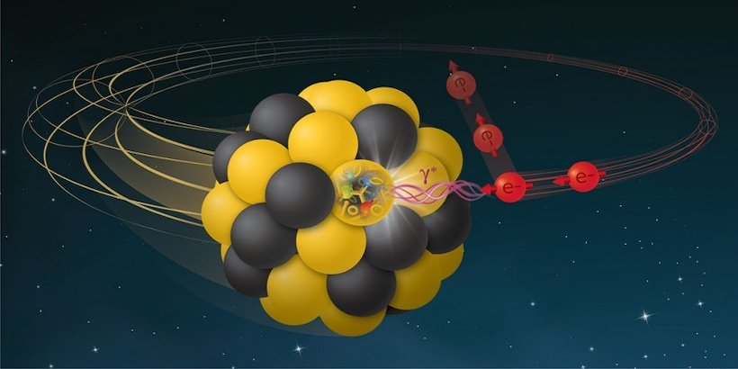
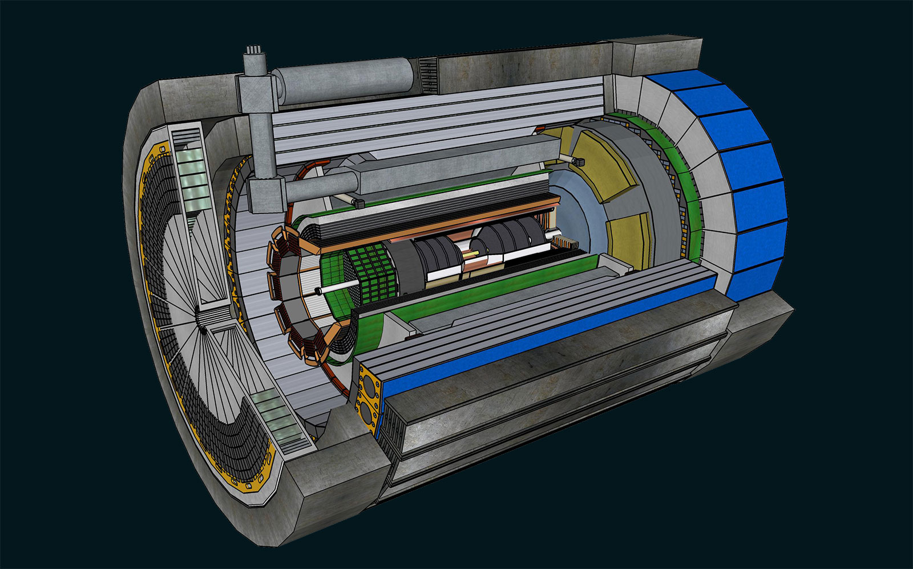
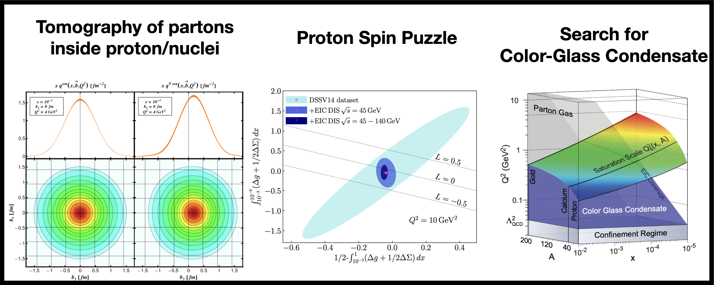

The electron-ion collider (EIC) is a planned particle accelerator that will be built at Brookhaven National Lab, on Long Island, New York, with a completion date of around 2030. The EIC represents one of the largest nuclear physics projects to be supported on US soil, and will be the first collider of its kind in the world. It will collide electrons with protons and heavy ions, such as gold, to study the internal structure of protons and nuclei. The beams will also have the capability to be polarized, so that physicists can study the effects of particles' spin on the collision system. As illustrated by the figure below, the electron will interact with the proton or ion via the exchange of a photon, which will make these collisions much simpler and cleaner than a proton-proton or ion-ion collision.

Having a new particle collider is not very useful if there isn't a detector to measure the particles produced in the collisions! I am a member of the ePIC Collaboration, which is currently designing and building the first general-purpose detector for the EIC. You can see a schematic of the detector below. Unlike the CMS detector at the LHC, the detector is asymmetric because the scattered electrons will preferentially travel towards the left side of the detector, while the fragments of the ion will travel towards the right side. Many of the sub-components of the detector are using new cutting-edge technologies which promise to allow extremely precise measurements of the particles produced in the collisions. I am particularly interested in the data acquisition systems (DAQ) of the detector. This consists of all the electronics and computers used to get the data out of the detector and safely stored on a hard drive. This is incredibly challenging, as it is anticipated that ePIC will output around 2 Tb of data each second, which has to be parsed, downscaled, and stored with little to no latency in the system!

The EIC promises to open the door to a new era of nuclear physics. Some major measurements that are anticipated to be made at the EIC are shown in the figure below. The EIC will be able to measure the internal structure of protons and nuclei to great precision. This will allow us to build a 'map' of where quarks and gluons are located inside of protons and nuclei, and how much momentum they carry. Another major goal is to study the so-called 'proton spin puzzle', which concerns a part of the proton's angular momentum that seems to be unaccounted for when measuring the individual particles that make up the proton. Finally, the EIC will search for a predicted phase of matter known as the color-glass condensate (CGC) that is predicted to form when examining the lowest-momentum components of a nucleus. Some figures illustrating these measurements are shown below, although they are only theoretical at the moment. My colleagues and I are trying to build the detector needed to make these measurements a reality!
